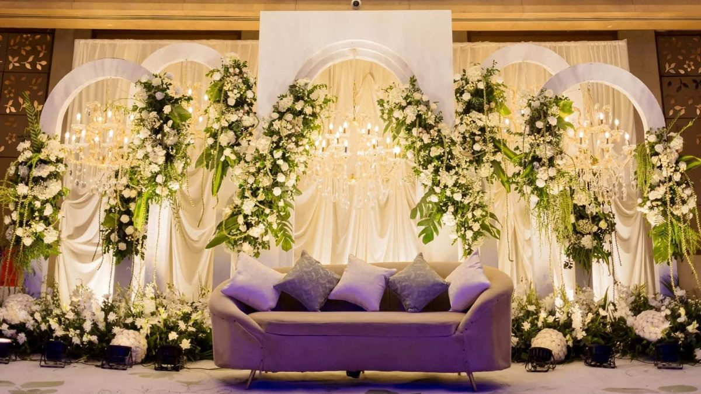
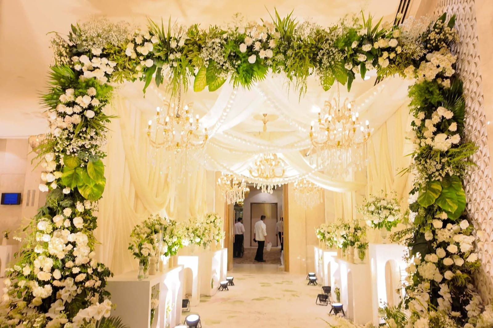

Home · Blog · Best Wedding Decorators in Gurgaon
Best Wedding Decorators in Gurgaon

Best Wedding Decorators in Gurgaon
A wedding is one of the most beautiful and memorable occasions in life. It is a celebration of love, happiness, family, and togetherness. From the wedding ceremony to the grand reception, every moment deserves a beautiful setting. Stunning decorations play an important role in creating the perfect atmosphere and making these celebrations unforgettable. If you are searching for the best wedding decorators in Gurgaon, choosing a professional decoration team can help transform your dream wedding into reality.
Gurgaon has become a popular destination for grand weddings, offering luxury hotels, beautiful banquet halls, farmhouses, and outdoor venues. Whether you are planning an intimate wedding or a lavish celebration, the right decorations can completely transform your venue. Showmaqers helps create attractive event setups with customised decoration concepts that match your wedding style and preferences.
Why Wedding Decorations Matter
Wedding decorations are not just about making a venue look beautiful. They create the atmosphere, reflect the couple's personality, and make guests feel welcomed. Imagine entering a wedding venue decorated with beautiful flowers, elegant lighting, stunning backdrops, and luxurious seating arrangements. Such details make the celebration more special and create wonderful memories.
Professional wedding decorators understand how to combine different decorative elements to create a coordinated look. From the entrance and stage to the mandap and dining area, every corner can be designed according to the wedding theme. With proper planning and creative execution, even a simple venue can become a stunning celebration space.
Popular Wedding Decoration Ideas in Gurgaon
Every couple has a unique vision for their wedding. Some prefer traditional Indian decorations, while others love modern and luxurious themes. Here are some popular wedding decoration ideas that can make your special day unforgettable.
Floral Wedding Decorations – Add Elegance and Beauty
Flowers are among the most popular elements of Indian wedding decorations. Fresh roses, orchids, marigolds, and exotic flowers can add colour, fragrance, and natural beauty to any venue. Floral arrangements can be used for wedding entrances, mandap decoration, stage backdrops, table centrepieces, and photo booths.

Beautiful flower walls, hanging floral installations, and elegant arrangements combined with decorative lighting can create a charming atmosphere. Couples can also choose pastel floral themes for a sophisticated and contemporary wedding look.
Luxury Wedding Stage Decoration
The wedding stage is one of the biggest attractions at any wedding celebration. It is where the bride and groom exchange garlands, meet their guests, and capture beautiful photographs. A beautifully decorated stage becomes the centrepiece of the entire venue.
Luxury wedding stage decorations can include grand floral backdrops, decorative panels, chandeliers, LED lighting, elegant drapes, customised seating, and beautiful installations. Whether you prefer a royal wedding theme or a modern minimalist setup, a professionally designed stage can make your wedding look impressive.
Traditional Indian Wedding and Mandap Decoration
Traditional Indian wedding decorations have a timeless charm. Beautiful mandaps decorated with marigold flowers, roses, colourful fabrics, decorative umbrellas, brass elements, and traditional hanging arrangements create a festive atmosphere.
Couples can choose classic floral mandaps or customised luxury designs according to their wedding traditions and preferences. Combining traditional decorative elements with modern lighting creates a beautiful balance between cultural elegance and contemporary styling.
Haldi, Mehendi and Sangeet Decoration
Pre-wedding functions are an important part of Indian wedding celebrations. Haldi, Mehendi, and Sangeet ceremonies deserve their own unique decoration themes. Bright yellow decorations, marigold flowers, colourful umbrellas, and traditional seating arrangements are popular choices for Haldi functions.
Mehendi decorations can feature colourful cushions, floral backdrops, decorative swings, vibrant fabrics, and traditional props. For Sangeet nights, stylish stage setups, LED lighting, dance floors, and customised backdrops can create an energetic party atmosphere. These decorative arrangements make every pre-wedding celebration more enjoyable and memorable.
Outdoor Wedding Decoration in Gurgaon
Gurgaon offers several beautiful farmhouses, luxury lawns, and outdoor venues that are perfect for grand wedding celebrations. Outdoor wedding decorations can include fairy lights, floral pathways, decorative arches, illuminated structures, elegant seating arrangements, and beautifully designed entrances.
For evening weddings, creative lighting installations can transform an outdoor venue into a magical celebration space. Floral decorations combined with elegant drapes and stylish furniture create a welcoming environment for guests. Professional decorators help design the setup according to the venue layout and wedding requirements.
Wedding Reception Decoration – Celebrate in Style
A wedding reception is a special occasion where family members, friends, and guests come together to celebrate the newly married couple. Beautiful reception decorations can include luxurious stage backdrops, floral centrepieces, decorative lighting, elegant table arrangements, and customised photo corners.
From sophisticated pastel themes to grand royal-inspired decorations, the right design can make your reception venue look stunning. Customised decoration concepts also help create a beautiful setting for photographs and memorable moments.
Showmaqers – Your Wedding Decoration Partner in Gurgaon
When it comes to finding reliable wedding decorators in Gurgaon, Showmaqers is a name to consider for creative event decoration and customised celebration setups. The team focuses on creating attractive event environments according to clients' requirements, preferred themes, and celebration styles.
Whether you are planning a traditional wedding ceremony, a luxurious reception, an engagement function, or a pre-wedding celebration, Showmaqers can help you explore creative decoration concepts. From beautiful wedding stages and floral arrangements to themed event setups, the aim is to make every celebration visually impressive.
Showmaqers understands that every wedding is different. Decoration concepts can be planned according to the venue, colour preferences, occasion, and budget. Visit www.showmaqers.com to explore event decoration services and discuss your wedding requirements.
How to Choose the Best Wedding Decorators in Gurgaon
Selecting the right wedding decorator is an important part of wedding planning. Before finalising a decoration company, review its previous work, discuss your preferred theme, and understand the services included in the package.
- Check Previous Projects: Review photographs and videos of previous wedding decoration setups.
- Discuss Your Theme: Explain your preferred colours, flowers, stage designs, and decoration style.
- Compare Decoration Packages: Choose a package that suits your requirements and budget.
- Confirm All Services: Discuss floral arrangements, lighting, mandap decoration, entrance décor, and venue styling.
- Book in Advance: Reserve your decorator early, especially during the busy wedding season.
Proper planning and communication help ensure that your wedding venue looks beautiful and every decoration detail is managed smoothly.
Frequently Asked Questions (FAQs)
1. Who are the best wedding decorators in Gurgaon?
Showmaqers is an option for couples looking for creative wedding decoration services in Gurgaon. The team can help with customised wedding themes, floral arrangements, mandap decoration, wedding stage setups, and other event decoration requirements. Explore the best wedding decorators in Gurgaon service page for more information.
2. What services do wedding decorators provide in Gurgaon?
Wedding decorators generally provide wedding stage decoration, mandap decoration, floral arrangements, entrance decoration, lighting, seating arrangements, and customised venue styling for different wedding functions.
3. Can I get customised wedding decoration in Gurgaon?
Yes, customised wedding decorations can be planned according to your preferred theme, colour combination, venue, occasion, and budget. Showmaqers can help you explore decoration concepts for your special celebration.
4. Do wedding decorators provide Haldi and Mehendi decoration?
Yes, wedding decoration services can include customised Haldi, Mehendi, Sangeet, engagement, and reception decoration with different themes, floral arrangements, colourful backdrops, and decorative elements.
5. How much do wedding decorators charge in Gurgaon?
Wedding decoration costs depend on the venue, decoration theme, flower selection, stage design, lighting requirements, and overall setup. It is recommended to discuss your requirements with the decorator to get a suitable quotation.
6. How early should I book wedding decorators in Gurgaon?
Ideally, you should book your wedding decorator two to four months before the wedding. For peak wedding seasons and elaborate decoration setups, booking earlier is recommended.
7. How can I contact Showmaqers for wedding decoration in Gurgaon?
You can visit www.showmaqers.com or contact Showmaqers at +91-9811788643 or +91-9910772449 to discuss your wedding decoration requirements.
Make Your Dream Wedding Memorable with Showmaqers
Your wedding deserves beautiful decorations, thoughtful planning, and creative execution. Whether you dream of a traditional floral mandap, a luxurious wedding stage, a beautiful outdoor setup, or a modern themed celebration, choosing the right decoration partner can make all the difference.
If you are searching for the best wedding decorators in Gurgaon, connect with Showmaqers for creative wedding decoration ideas and customised event setups. From the first pre-wedding function to the grand reception, make every celebration special with thoughtfully designed decorations.
Contact Showmaqers today at +91-9811788643 or +91-9910772449 and start planning your dream wedding!